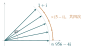

STEP III 1987，第 3 题
继续之前，请先阅读题目（原题为英文）。题目载于 STEP Support Programme 的题目资料库： step.maths.org/questions/87-s3-q3
引子
1706 年，伦敦数学家梅钦（John Machin）徒手把 \(\pi\) 计算到小数点后 \(100\) 位，在此之前从未有人接近过这个纪录。他的秘诀就是第 (ii) 部分的公式：这条公式把 \(\frac\pi4\) 用几个角表示出来，而这些角的正切都是很小的分数。分数愈小，级数（series）\(\tan^{-1}x = x - \frac{x^3}{3} + \frac{x^5}{5} - \cdots\) 收敛（converge）得愈快。梅钦公式及其各种变体，在其后两个半世纪一直是计算 \(\pi\) 的标准方法，直到电脑和 第 2.6 节 的方法出现才被取代。
这条公式看起来像是三角恒等式（identity）变出来的奇迹。这道题目却说明，它其实是关于复数（complex number）乘法的一个事实：复数相乘时，它们的辐角（argument）相加。只要把几个实部、虚部都是整数的复数乘一次，整条公式就得证。
动笔之前
\(5 - \mathrm{i}\) 的辐角是甚么？\(1 + \mathrm{i}\) 的呢？复数相乘时，辐角会怎样变化？
\(\arg(5 - \mathrm{i}) = -\tan^{-1}\frac15\)，是一个很小的负角，而 \(\arg(1 + \mathrm{i}) = \frac\pi4\)。复数相乘时，模（modulus）相乘，辐角相加（可相差 \(2\pi\) 的倍数）。因此 \[\arg\bigl((5 - \mathrm{i})^4(1 + \mathrm{i})\bigr) = \frac\pi4 - 4\tan^{-1}\frac15 \quad\text{（可能再加上若干个 } 2\pi\text{）}.\] 如果我们能算出这个乘积，再用另一个方法求出它的辐角，就得到一条恒等式。
逐步解题
阶段 1 模的上下界
求上界（upper bound）时，把两边平方。求下界（lower bound）时，把 \(|x|\cos\alpha + |y|\sin\alpha\) 看成两个向量的点积（dot product）。
上界：\((|x| + |y|)^2 = x^2 + y^2 + 2|x||y| \geq x^2 + y^2 = |z|^2\)，而且两边都非负，所以 \(|z| \leq |x| + |y|\)。
下界：\(|x|\cos\alpha + |y|\sin\alpha\) 是长度为 \(|z|\) 的向量 \((|x|, |y|)\) 与单位向量（unit vector）\((\cos\alpha, \sin\alpha)\) 的点积。点积不会超过两个向量长度之积，所以它不超过 \(|z|\)。（代数证法：\(|z|^2 - (|x|\cos\alpha + |y|\sin\alpha)^2 = (|x|\sin\alpha - |y|\cos\alpha)^2 \geq 0\)。）■
阶段 2 关键的乘法
先计算 \((5 - \mathrm{i})^2\)，再把结果平方，然后乘以 \(1 + \mathrm{i}\)。
\((5 - \mathrm{i})^2 = 25 - 10\mathrm{i} - 1 = 24 - 10\mathrm{i}\)。于是 \((24 - 10\mathrm{i})^2 = 576 - 480\mathrm{i} - 100 = 476 - 480\mathrm{i}\)。最后 \[(476 - 480\mathrm{i})(1 + \mathrm{i}) = 476 + 476\mathrm{i} - 480\mathrm{i} + 480 = 956 - 4\mathrm{i}.\]
现在比较辐角。\(956 - 4\mathrm{i}\) 的辐角是甚么？你凭甚么肯定没有多出 \(2\pi\) 的倍数？
\(956 - 4\mathrm{i} = 4(239 - \mathrm{i})\)，其辐角为 \(-\tan^{-1}\frac{1}{239}\)。因此 \[\frac\pi4 - 4\tan^{-1}\frac15 = -\tan^{-1}\frac{1}{239} + 2k\pi\] 其中 \(k\) 是某个整数。但 \(0 < \tan^{-1}\frac15 < \frac15\)，所以左边介乎 \(\frac\pi4 - \frac45\) 与 \(\frac\pi4\) 之间，即大约介乎 \(-0.02\) 与 \(0.79\) 之间；而右边除去 \(2k\pi\) 后介乎 \(-0.005\) 与 \(0\) 之间。由于 \(2\pi\) 远大于两者的差距，故 \(k = 0\)。移项后得 \[\frac\pi4 = 4\tan^{-1}\frac15 - \tan^{-1}\frac{1}{239}. \qed\] 图 5.1.1 显示了整个过程：由 \(45^\circ\) 出发，每乘一次 \(5 - \mathrm{i}\) 就顺时针旋转约 \(11.3^\circ\)，乘了四次之后，刚好越过实轴，只过了 \(0.24^\circ\)。

阶段 3 第二条公式
依样画葫芦，这次应该计算哪一个乘积？
考虑 \((4 + \mathrm{i})^3(20 + \mathrm{i})(1985 + \mathrm{i})\)，它的辐角是 \(3\tan^{-1}\frac14 + \tan^{-1}\frac{1}{20} + \tan^{-1}\frac{1}{1985}\)。现在 \((4 + \mathrm{i})^2 = 15 + 8\mathrm{i}\)，所以 \((4 + \mathrm{i})^3 = (15 + 8\mathrm{i})(4 + \mathrm{i}) = 52 + 47\mathrm{i}\)。于是 \((52 + 47\mathrm{i})(20 + \mathrm{i}) = 1040 + 52\mathrm{i} + 940\mathrm{i} - 47 = 993 + 992\mathrm{i}\)，而 \[(993 + 992\mathrm{i})(1985 + \mathrm{i}) = (1971105 - 992) + (993 + 1969120)\mathrm{i} = 1970113 + 1970113\mathrm{i}.\] 实部（real part）等于虚部（imaginary part），所以辐角是 \(\frac\pi4\)。三个角都是很小的正角（它们的和小于 \(3 \cdot \frac14 + \frac1{20} + \frac{1}{1985} < 1 < 2\pi\)），所以毋须担心 \(2\pi\) 的倍数，公式由此得证。■
回顾
相乘时辐角相加。单凭这一个事实，高斯整数（Gaussian integers）的乘积就变成了角与角之间的恒等式。
留意 \(2\pi\) 的倍数。辐角只能确定到相差 \(2\pi\) 的倍数，所以每条恒等式都要靠估计大小来确定那个倍数。
整数包办一切。所有运算都只涉及整数；关于 \(\pi\) 的恒等式是精确地得出的，没有用到任何近似。
背后的数学
为甚么梅钦公式这样适合用来计算？级数 \(\tan^{-1}x = x - \frac{x^3}{3} + \frac{x^5}{5} - \cdots\) 在 \(|x| \leq 1\) 时收敛，但在 \(x = 1\) 时慢得令人难受：要用 \(1 - \frac13 + \frac15 - \cdots\) 求得 \(\frac\pi4\) 的三位小数，大约需要一千项。取 \(x = \frac15\) 时，每一项约为前一项的 \(25\) 分之一，即每项大约带来 \(1.4\) 位小数；取 \(x = \frac{1}{239}\) 时，每项约 \(4.8\) 位。梅钦的 \(100\) 位小数，只需要第一个级数约 \(70\) 项和第二个级数约 \(20\) 项。1873 年，William Shanks 用一条梅钦型公式算出 \(707\) 位，单是运算就花了多年时间；到了 1944 年，人们发现他在第 \(528\) 位出了错，其后的数字全部不对。
再谈高斯整数
形如 \(a + b\mathrm{i}\) 而 \(a\)、\(b\) 为整数的数，就是 第 1.6 节 的高斯整数。\(5 - \mathrm{i}\) 之所以这样好用，原因在于一个因数分解（factorisation）：\(239^2 + 1 = 57122 = 2 \times 13^4\)，在高斯整数中写成 \((239 + \mathrm{i})(239 - \mathrm{i}) = (1 + \mathrm{i})(1 - \mathrm{i})\,(3 + 2\mathrm{i})^4(3 - 2\mathrm{i})^4\)，而 \(5 - \mathrm{i} = (1 - \mathrm{i})(3 + 2\mathrm{i})\) 正是由同一批高斯质数（Gaussian primes）组成的。寻找梅钦型公式，其实就是把形如 \(n^2 + 1\) 的数作因数分解的问题。1899 年，Carl Størmer 正是用这个想法证明了：形如 \(\frac\pi4 = a\tan^{-1}\frac1m + b\tan^{-1}\frac1n\) 而 \(a\)、\(b\)、\(m\)、\(n\) 为整数的公式只有四条，即梅钦的一条，以及欧拉（Euler）、Hermann 和 Hutton 分别发现的三条。
旋转
乘以一个模为 \(1\) 的复数，就是把平面旋转（rotation）。正因如此，凡是涉及旋转和角的事情，复数都是最自然的语言：由本章稍后的几何，到电机工程中的交流电，以至量子力学中的波函数，莫不如此。在 第 4.2 节 中，\(\tan^{-1}\) 的加法公式（addition formula）来自一个巧妙的代换（substitution）；在这里，它来自复数的乘法。两者其实是同一个事实，只是从不同的角度去看。
思维技巧
角的和之间的恒等式，就是乘积的辐角之间的恒等式。把乘积精确地算出来，再读出它的辐角。
复数的运算机械而精确，而处理反三角函数（inverse trigonometric functions）则容易出错。把后者转化为前者，往往是最快捷的证明途径。
延伸练习
一个近亲。试做 STEP II 2000，第 4 题。这道题用与本节相同的方法，证明另一条关于 \(\frac\pi4\) 的反正切公式：把复数相乘，然后读出辐角。
欧拉公式。考虑 \((2 + \mathrm{i})(3 + \mathrm{i})\)，证明 \(\tan^{-1}\frac12 + \tan^{-1}\frac13 = \frac\pi4\)。
Hutton 公式。证明 \(\frac\pi4 = 2\tan^{-1}\frac13 + \tan^{-1}\frac17\)。
要多少项？估计一下，要把 \(\pi\) 计算到小数点后 \(20\) 位，梅钦公式中的两个级数各需要多少项。然后用计算机实际算出最初几位。
延伸阅读
Jonathan Borwein & Peter Borwein, Pi and the AGM（Wiley）。书中载有梅钦型公式的历史。
Jörg Arndt & Christoph Haenel, Pi Unleashed（Springer）。生动地介绍古今各种计算 \(\pi\) 的方法。
Tristan Needham, Visual Complex Analysis（Oxford University Press）。要从几何角度理解复数，这是最好的一本书。第 1 章讲的就是乘法即旋转加缩放。